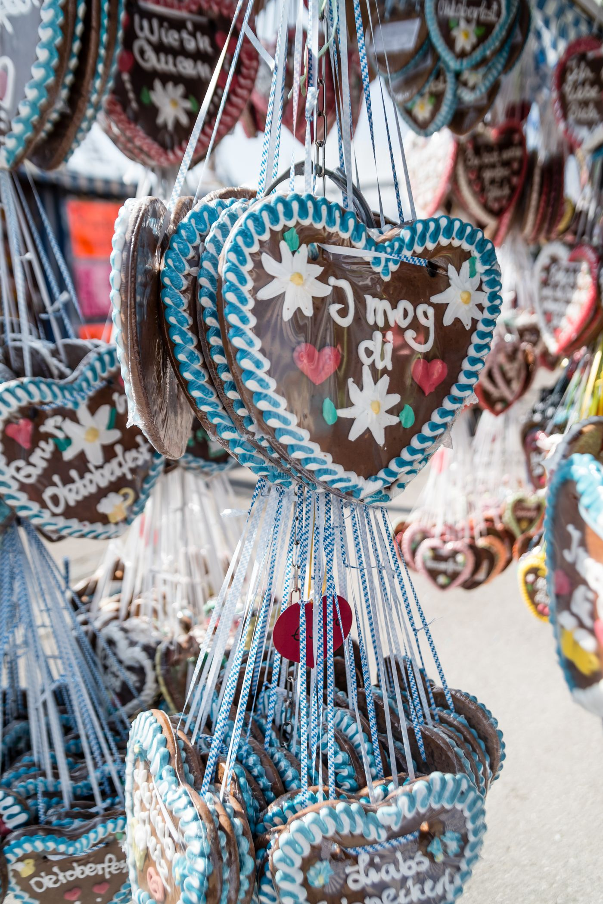

Wiesn · 2025
300 hearts for a brewery crew
Klassik · 18 cm300 hearts“Prost aufs Team”€2,700 at table price6 weeks lead
The ask — a Munich brewery wanted a heart for every person on its Wiesn roster — brewers, drivers, tent staff — with one line for all of them and the brewery's blue-and-white border.
What I did — “Prost aufs Team” is 15 characters, so it sits on the Klassik with the border to spare. 300 hearts meant 54 kg of dough and 75 trays; I piped them in nine evening sessions and boxed them by shift so the tent managers could hand them out without sorting.
The outcome — delivered two days before Anstich. The brewery photographed the night shift wearing them, and ordered 350 for 2026 before the festival ended.